Always On AG من الصفر، مثل ما بعملها ع الـ production
30 خطوة، من سيرفرين فاضيين لـ Availability Group شغال مع listener و automatic failover. كل خطوة فيها وين تشتغل وشو تكبس، ومعها صور من الفيديو. الأسماء هون أسماء lab، حط أسماءك مكانها.
▶ شوف الفيديو⬇ PDF- SQLPRD01 (10.112.1.11) و SQLPRD02 (10.112.1.12)، Windows Server، domain
corp.local. - DCPRD01 الـ domain controller، و FSPRD01 للـ witness.
- Cluster
PRDCL01(10.112.1.20)، AGPRDAG، listenerPRDLSN01(10.112.1.21)، databaseCoreDB.
1اعمل الـ KDS root key
Get-KdsRootKey Add-KdsRootKey -EffectiveTime ((Get-Date).AddHours(-10))
الـ AddHours(-10) للـ lab بس، لأنه عندنا domain controller واحد.
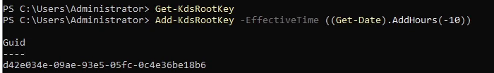
2اعمل group للسيرفرين
Users > right-click > New > Group
الاسم SQL_Servers، Global و Security، و OK. بعدين:
SQL_Servers > Members > Add > Object Types > Computers
ضيف SQLPRD01 و SQLPRD02، Check Names، و OK.
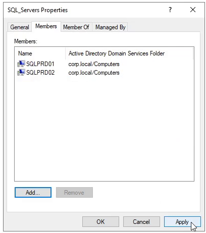
3اعمل الـ gMSA
New-ADServiceAccount -Name gmsa_sql -DNSHostName gmsa_sql.corp.local -PrincipalsAllowedToRetrieveManagedPassword SQL_Servers
ما رجع إشي؟ يعني نجح.
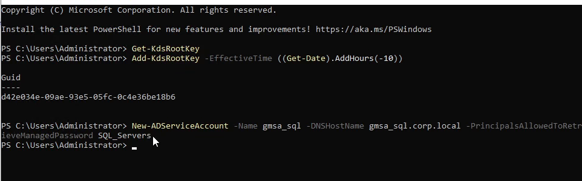
4جرّب الـ gMSA على السيرفرين
Test-ADServiceAccount -Identity gmsa_sql
رجع False؟ السيرفر لسه ماسك الـ Kerberos ticket القديمة. امسحها وجرّب كمان مرة:
klist -li 0x3e7 purge Test-ADServiceAccount -Identity gmsa_sql
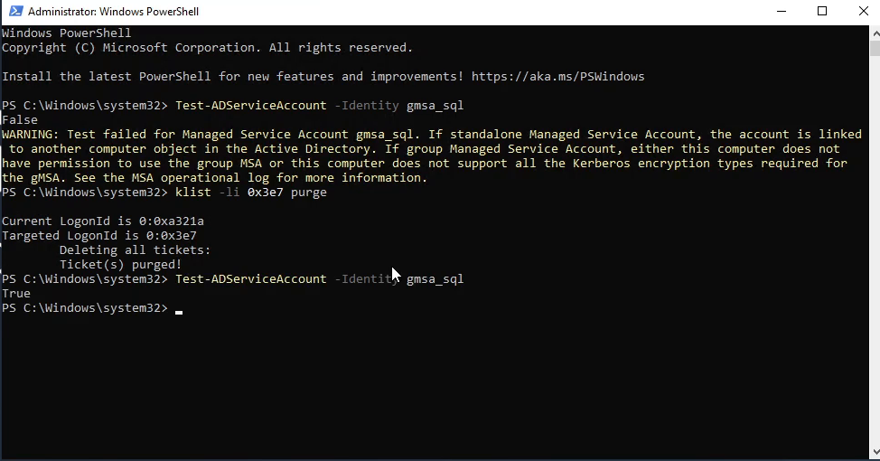
5اعمل الـ folders واعطي الـ gMSA صلاحية
اعمل D:\Data و L:\LOGs. على كل واحد:
right-click > Properties > Security > Edit > Add > Object Types > Service Accounts
اكتب gmsa_sql، Check Names، OK، وعلّم Full control.
6نزّل SQL Server 2022
ابحث عن SQL Server 2022 Evaluation Center، نزّل الملف وشغّله، اختار Download Media وبعدين ISO. نفس الـ ISO بتنفع لـ SQLPRD02، فالسيرفرين بيكونوا على نفس الـ patch.
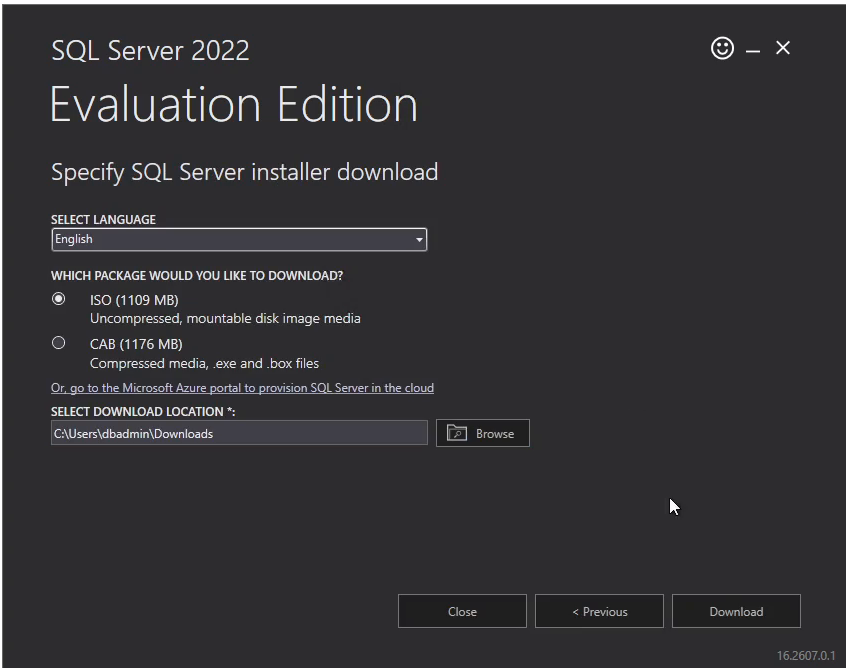
7شغّل الـ setup
double-click على الـ ISO، بعدين setup > right-click > Run as administrator
Installation > New SQL Server standalone installation
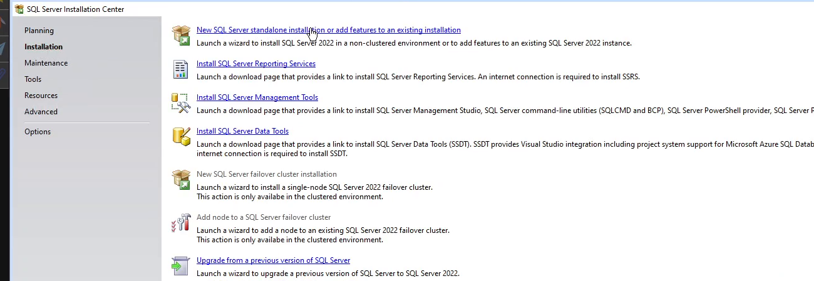
8الـ Edition والـ Features
Evaluation، Accept، و Microsoft Update بدون tick. بالـ Features علّم بس Database Engine Services.
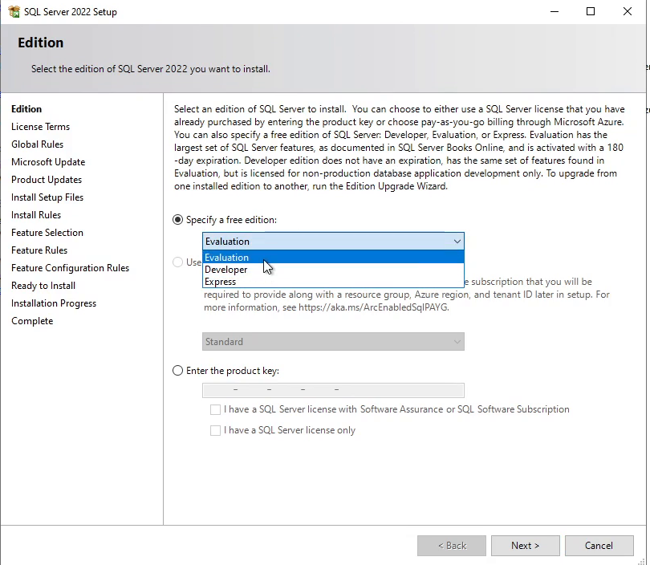
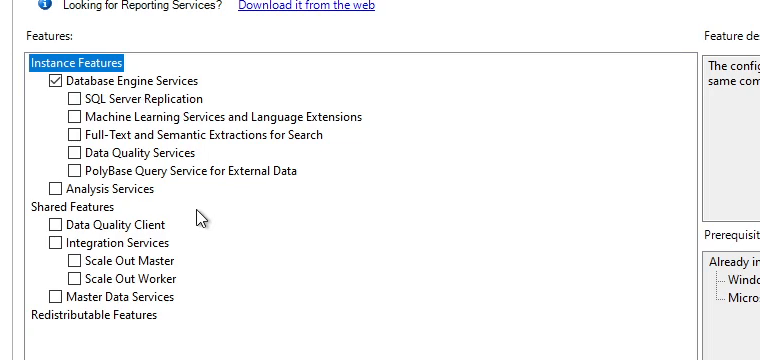
9Default instance
خليها Default instance (MSSQLSERVER). بتسمع على port 1433 وبتشبك عليها باسم السيرفر بس.
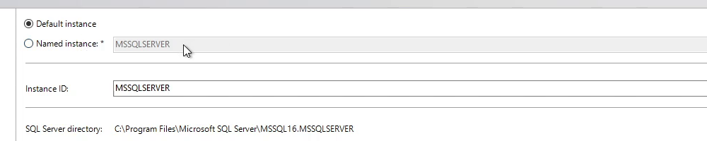
10الـ Service Accounts
SQL Server Agent و Database Engine: CORP\gmsa_sql$، الـ Password فاضي، Startup Automatic. الـ SQL Server Browser: Disabled. وعلّم Grant Perform Volume Maintenance Tasks.
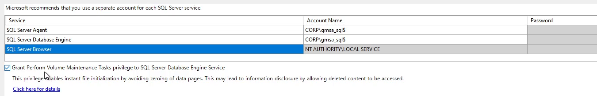
11Mixed Mode والـ admins
Mixed Mode، حط password للـ sa، بعدين Add Current User. الـ Collation خليها الـ default.
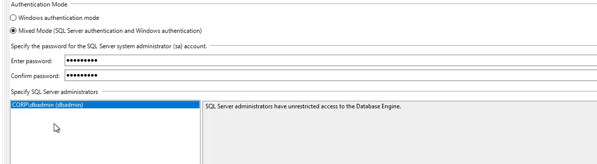
12الـ Data Directories
User database directory D:\Data، والـ log L:\LOGs.
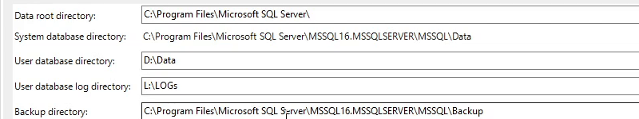
13الـ Memory، وبعدين Install
TempDB و MaxDOP زي ما هم. الـ Memory: Recommended وعلّم الـ accept. بعدين Next و Install.
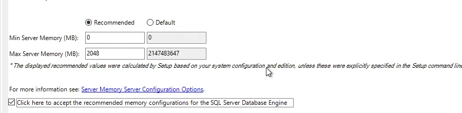
14Failover Clustering على السيرفرين
Manage > Add Roles and Features > Next > Features > Failover Clustering > Add Features > Install
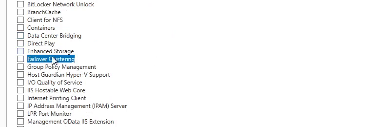
15نزّل SSMS
ابحث عن Install SQL Server Management Studio من Microsoft Learn ونزّل الـ installer. على SQLPRD02 ما بنحتاجه، بنشتغل من SQLPRD01.
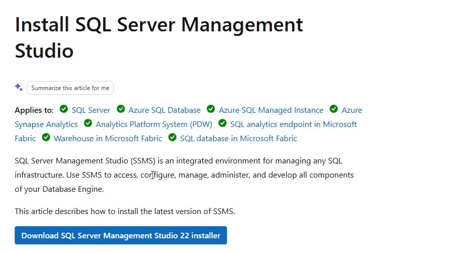
16Validate
Server Manager > Tools > Failover Cluster Manager > Validate Configuration
ضيف SQLPRD01 و SQLPRD02، و Run all tests. الـ error تبع Switch Enabled Teaming بيطلع على الـ VMs، عادي. الباقي warnings.
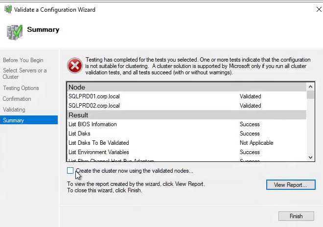
17Create Cluster
الاسم PRDCL01، الـ IP 10.112.1.20. شيل الـ tick عن Add all eligible storage، الـ cluster بياخذ shared folder مش disk.
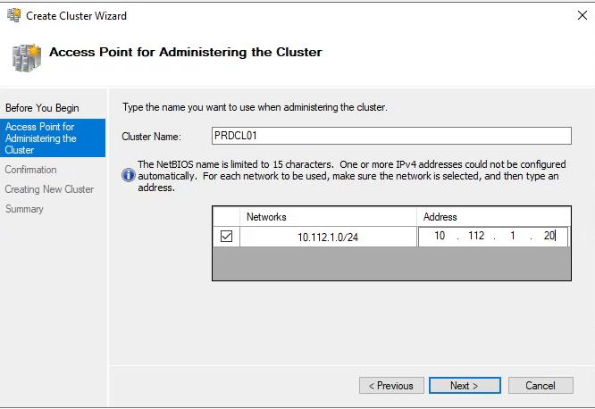
18اعمل الـ shared folder
اعمل C:\Shared\witness. بعدين:
witness > Properties > Sharing > Advanced Sharing > Share this folder > Permissions > Add > Object Types > Computers
ضيف PRDCL01، شيل Everyone، واعطيه Full Control. وكمان بالـ Security tab: نفس الإشي، PRDCL01 مع Full control.
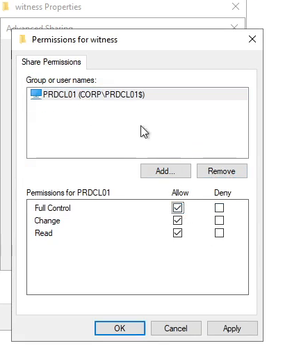
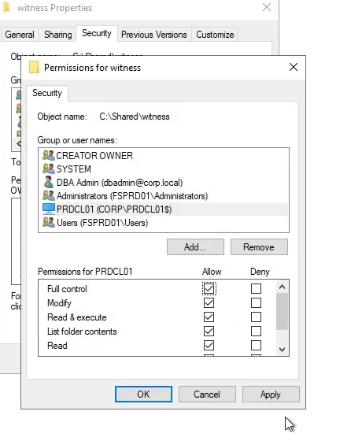
19الـ quorum
PRDCL01 > right-click > More Actions > Configure Cluster Quorum Settings > Select the quorum witness > Configure a file share witness
الـ path \\FSPRD01\witness، Next، و Finish. هيك صار عنا 3 votes: الـ node الأولى، الثانية، والـ witness.
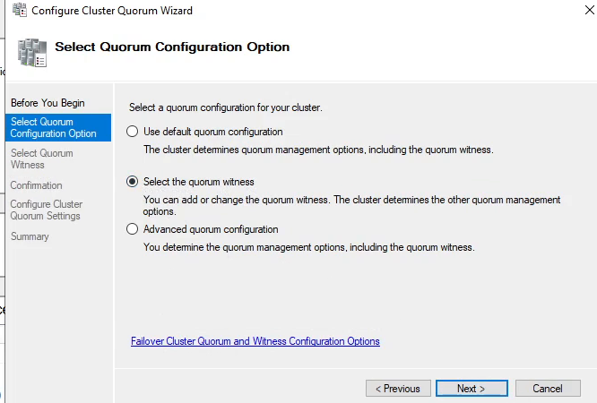
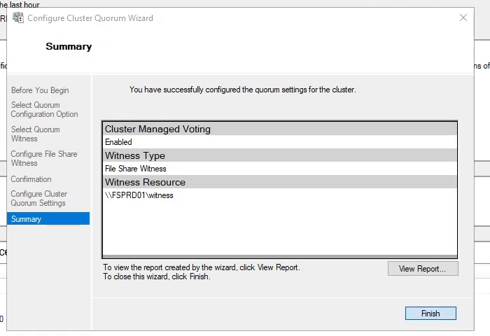
20Create Computer objects للـ cluster
ليش؟ الـ cluster هو اللي بيعمل الـ computer object تبع الـ listener.
View > Advanced Features
Computers > right-click > Properties > Security > Advanced > Add > Select a principal
PRDCL01 (Object Types: Computers)، Applies to This object only، وعلّم Create Computer objects.
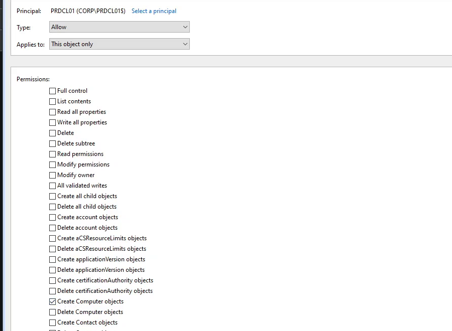
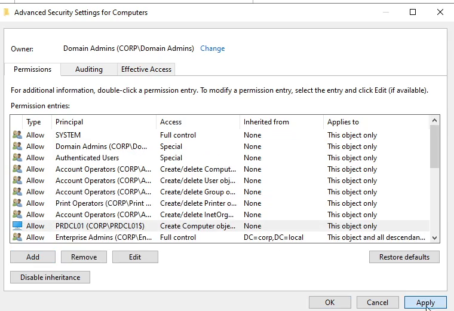
21CoreDB مع full backup
Databases > right-click > New Database
الاسم CoreDB، وبالـ Options الـ Recovery model Full. بعدين:
CoreDB > right-click > Tasks > Back Up > Full > OK
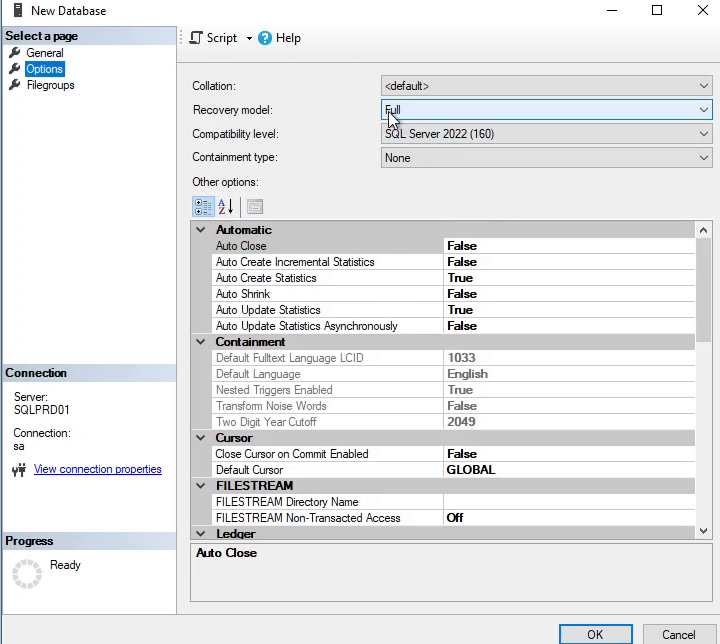
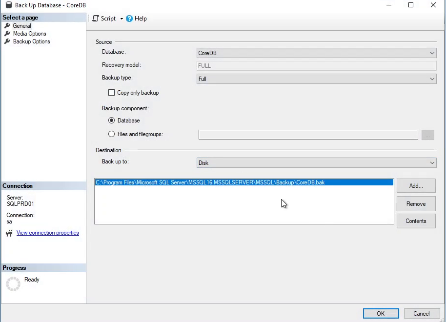
22Enable Always On على السيرفرين
SQL Server Services > SQL Server (MSSQLSERVER) > right-click > Properties > Always On Availability Groups
علّم Enable، Apply، OK، وبعدين Restart للـ service. عمل timeout؟ اعمل Start كمان مرة.
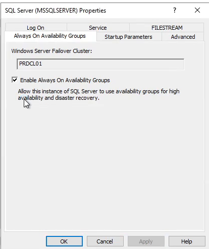
23تأكد من الـ port
SQL Server Network Configuration > Protocols for MSSQLSERVER > TCP/IP > IP Addresses > IPAll
TCP Dynamic Ports فاضي، و TCP Port 1433. لو الـ OS firewall شغال، افتح TCP 1433 و 5022.
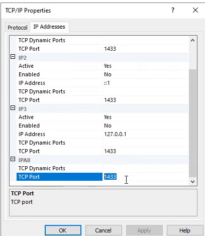
24الـ AG wizard: الاسم والـ database
Always On High Availability > right-click > New Availability Group Wizard
الاسم PRDAG، Cluster type Windows Server Failover Cluster. بعدين اختار CoreDB (لازم تكون Meets prerequisites).
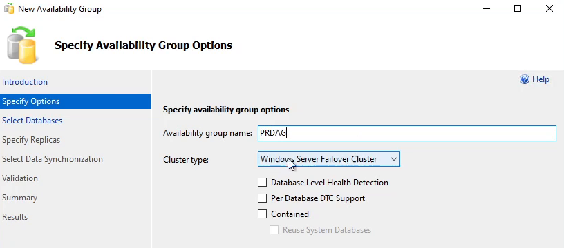
25الـ Replicas
Add Replica > SQLPRD02 > Connect
على السيرفرين: Automatic Failover، Synchronous commit، و Readable Secondary Yes. الـ Endpoints على 5022 زي ما هي.
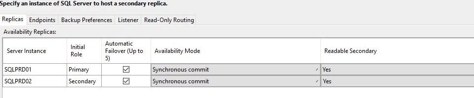
26Backup Preferences
اختار Primary، عشان الـ backup jobs تاخذ الـ backup على الـ primary.
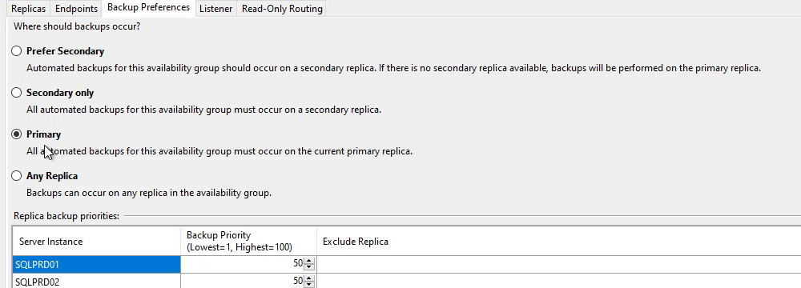
27الـ Listener
Create an availability group listener: الاسم PRDLSN01، Port 1433، Static IP، و Add الـ IP 10.112.1.21.
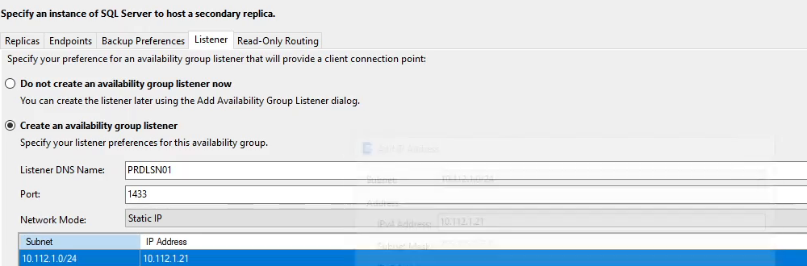
28Automatic seeding
اختار Automatic seeding، بعدين Next، Next، و Finish. بيشتغل لأنه الـ paths نفسها على السيرفرين (خطوة 5).
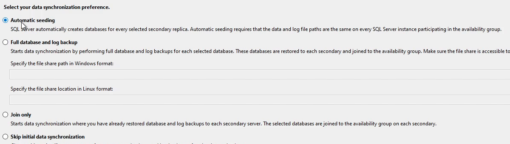
29الـ Dashboard
Availability Groups > PRDAG > right-click > Show Dashboard
لازم يكون Healthy والاثنين Synchronized. والـ listener PRDLSN01 صار computer object بالـ AD.
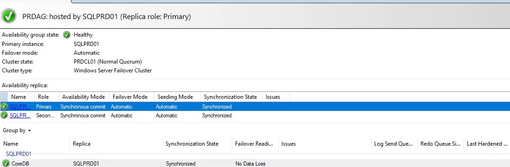
30طفّي SQL Server على SQLPRD01
SQL Server (MSSQLSERVER) > right-click > Stop > Yes
ارجع للـ Dashboard: الـ AG صار على SQLPRD02. رجّع SQLPRD01 بـ Start، بيرجع secondary. الـ failback ما بيصير لحاله.
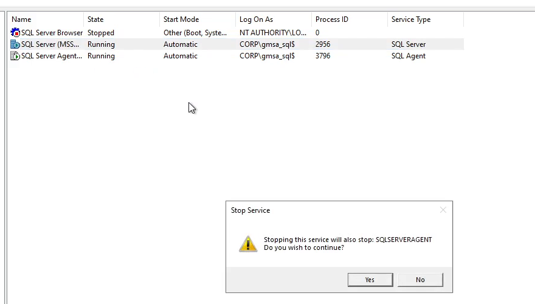
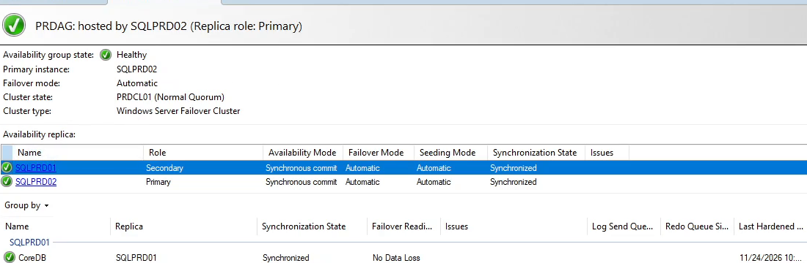
PRDLSN01 بس، وهو بيوديها للـ primary وين ما كان.- الـ KDS key: استنى الـ 10 ساعات بدل
AddHours(-10). - الـ firewall شغال، وافتح TCP 1433 و 5022.
- الـ logins موجودة بالـ master، والـ master مش جوا الـ AG. اعمل نفس الـ logins على SQLPRD02.